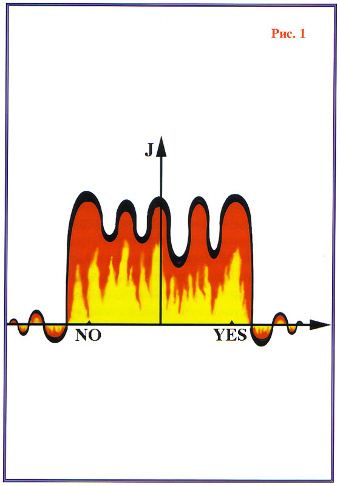
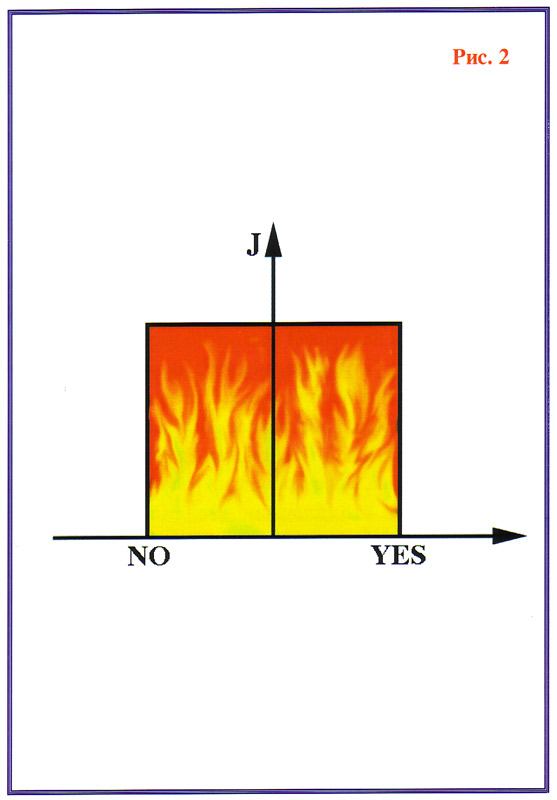
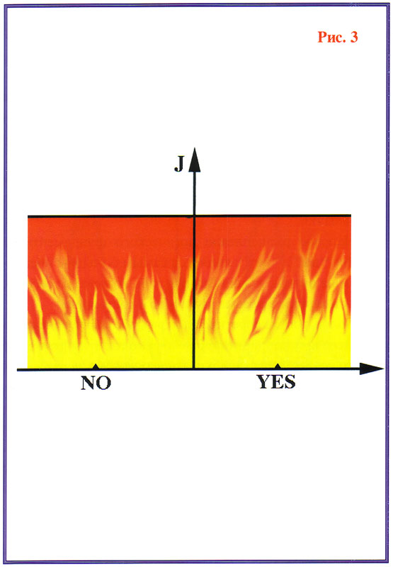
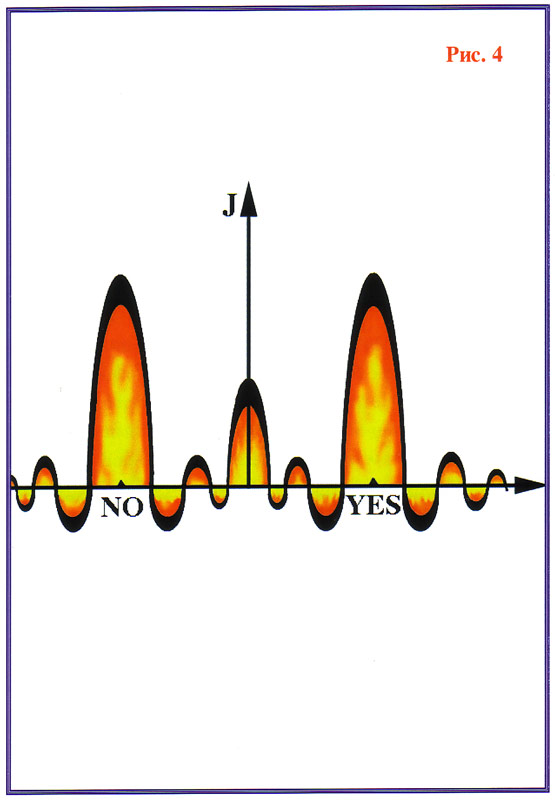
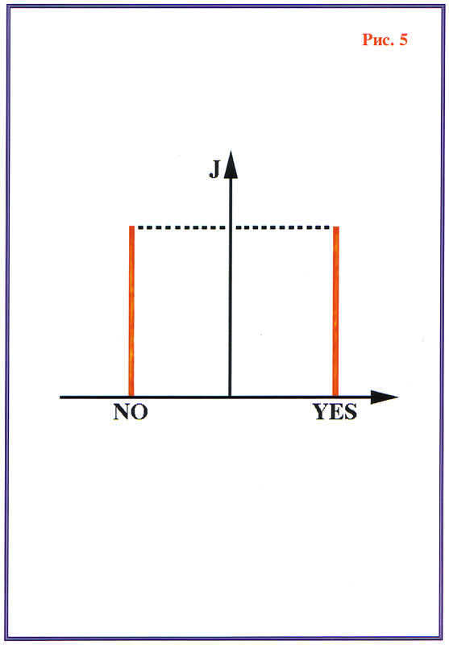
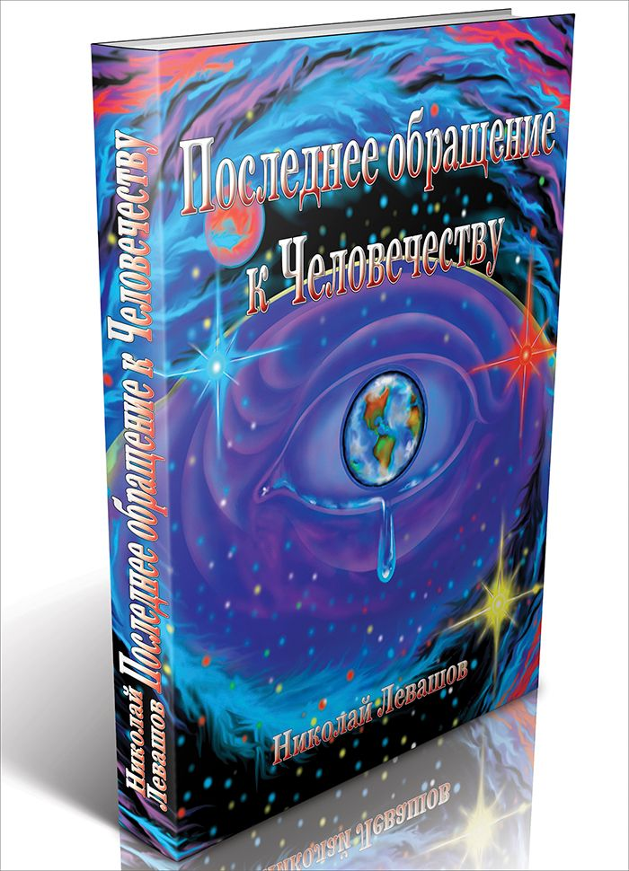

К разумным жителям Земли, к расе, называющей себя Человечеством, обращается Коалиционный Отряд Наблюдателей (К.О.Н.). Передано посредниками Шамбалы Е.И. Рерих и Н.К. Рерих.
Настоящее Обращение К.О.Н. к землянам является третьим по счёту, контрольным. Первое Обращение К.О.Н. передал в 576 г. до Р.Х. жителям крупнейшего в то время на Земле города Амураджхапуре. Второе Обращение К.О.Н. передал в 711 г. от Р.Х. жителям крупнейшего в то время на американском материке города Ткаацеткоаля. Настоящее Обращение К.О.Н. к землянам, в основном, идентично первым двум по содержанию, составлено на основных из настоящих языков Земли: на китайском, английском, русском и испанском.
Текст Обращения отредактирован, с учётом современного уровня знаний и заблуждений жителей Земли. Целью Обращения является предложение о проведении в некотором будущем переговоров между представителями Человечества и представителями Коалиции на предмет вступления Человечества в Коалицию. Поскольку проведение переговоров будет возможным только после выполнения человечеством некоторых предварительных условий (ниже приводятся эти условия).
Предваряемые для правильного их понимания, как краткими сведениями космического характера, так и сравнительной характеристикой образа мышления Человечества.
- 1 -
К настоящему времени Человечество составило себе представление о Вселенной в целом, несколько более правильное, чем во время первого и второго Обращений. Действительно, Земля не является плоской и не находится в центре Вселенной. Она, как одна из планет, вращается вокруг Солнца. Действительно, Солнце не находится в центре Вселенной, а является одной из звёзд, входящих в состав Галактики. Действительно, последняя из трансформаций энергий, поддерживающих деятельность звёзд и, естественно, Солнца и дающих возможность существования жизни на Земле и сходных с нею планетах, не является единственной во Вселенной. В остальном же, большинство космогонических догадок являются ошибочными.
Является большим заблуждением вера ваших учёных в существование каких-то, пусть даже ещё не открытых ими незыблемых законов Вселенной и постоянство мировых констант. Так, гравитационная постоянная, заметно меняется в пределах Вашей солнечной системы, не говоря уже о более крупных масштабах. Это привело к существенным ошибкам в определении Вами размеров Галактики и расстояний до других галактик, и вызвало появление ошибочной теории о замкнутой Вселенной, а в этом году и теории разбегающейся Вселенной. Ошибочно и представление о всеобщей трёхмерности пространства, на котором прежде всего базируется Ваше космогоническое представление.
Мир хаотичен, в нём нет ничего незыблемого, в том числе — мерности. Мерность пространства во Вселенной колеблется, плавно изменяется в весьма широких пределах. Наилучшим условием возникновения органической жизни является мерность пространства, равная +π (3,14...). Значительные отклонения от этой величины пагубно действуют на живую Природу. В настоящее время, окрестность солнечной системы имеет мерность равную +3,00017... Близость этого числа к целому числу 3 (три) ввела вас в заблуждение.
В окрестностях вашего скопления Галактик, дрейфует гравитационный циклон, имеющий мерность -3,15, который может задеть краем вашу Галактику, уничтожив органическую жизнь на всех планетах, на которых не будут приняты меры по защите.
В частности, это обстоятельство делает необходимым для вас вступление в Коалицию, в сжатые сроки, самое позднее, через 6.500 земных лет, с момента подачи настоящего Обращения, т.е., с 1929-го г. от Р.Х., с тем, чтобы Коалиция успела оказать помощь человечеству в подготовке к защите от циклона..
В настоящее время в Вашей Галактике насчитывается около 220.000 (двести двадцать тысяч) разумных рас, рассматривающих вопрос о вступлении в Коалицию, в том числе и Вы. К.О.Н. просит вас не рассматривать сообщение, как попытку воздействовать на ваш ответ (информацией о циклоне).
Вы ошибаетесь и в вопросе происхождения жизни на Земле. Солнечная система возникла из пылевидного облака, засеянного строительными отрядами Коалиции в области Вселенной, отвечающей двум условиям развития и возникновения жизни. Эта область достаточно удалена от остальных звёзд и имеет мерность пространства, близкую к +π.
Вы ошибаетесь в уподоблении разумной расы живому индивиду, представляя в недалёком будущем неизбежное одряхление и смерть человечества. В эволюционном процессе, о котором вы имеете также слабое представление, новые виды живых существ происходят от некоторых старых видов, и нашей заботой должно быть, чтобы новые виды разумных рас на Земле происходили от Вашей. Именно это соображение должно определить стратегию разумной расы.
Между тем, по наблюдениям К.О.Н., человечество совершенно не руководствуется такой, или подобной стратегией, представляя своё развитие воле случая и направляя все свои усилия на удовлетворение кратковременных потребностей. Не следует думать, что ваши заблуждения являются случайными, преходящими. Они неизбежны и устойчивы в силу специфики Вашего мышления, краткому анализу которого посвящается следующая глава.
- 2 -
Мышление живой материи и само существование живой материи
имеет общую основу (напоминаем, что мы вынуждены выражаться вашим языком, на вашем земном уровне знаний, и из-за этой трудности порой заведомо неизбежны определённые некорректности, например, в предыдущей фразе). И мышление, и существование являются результатом борьбы с энтропией логичности.
Вашему мышлению также свойственны поиски логичности, но лишь на этом и заканчивается сходство вашего мышления с мышлением, свойственным подавляющему большинству разумных рас, входящих в Коалицию. Данное
обстоятельство вынуждает многих участников К.О.Н. сомневаться в правомерности обращения к вам, как к разумной расе.
Основой предельно убогой личности являются понятия «да» и «нет», как якобы реально существующие и многократно проявляющиеся при ступенчатом анализе любого сложного процесса.
При этом, число ступеней в анализе — конечно и, чаще всего, весьма мало, даже если вами исследуется достаточно серьёзная проблема. Поиск ответа сводится к выбору одного из двух, где два — число ступеней возможных решений, тогда как наиболее правильное решение лежит между ними.
Вашим математикам будет понятна следующая аналогия: решение проблемы, появляющееся после решения частных вопросов типа «да»-«нет» аналогично выбору одной из вершин N-мерного куба, тогда как пространство возможных решений состоит из всех точек N-мерного пространства.
Если же уточнить, то реальная мерность пространства решений чаще всего определяется вами неверно и очень редко является на самом деле численной. Нынешнее отношение к вам, как к разумной расе затрудняется следующими соображениями информационного порядка.
Насколько мы можем судить, любой научный или юридический закон, смысл любого открытия или изобретения, сущность любой важной мысли могут быть выражены любой фразой, состоящей из ста слов из словаря в 50.000 слов, включающего математические и другие условные обозначения. Общее количество возможных фраз такого словаря представляется весьма скромной величиной, равной 100.
Если же оставить только фразы, имеющие только диагностическую сущность, т.е. определяющие смысл, то их число сокращается до 50. Если же теперь отбросить фразы, в которых слова грамматически правильно связаны, но содержание их не имеет даже видимости смысла, то число осмысленных фраз сократится до 25. На самом же деле, отсев ложных от истинных утверждений, по самым завышенным оценкам, даёт список всего из не более 3-10 утверждений, которые могут быть высказаны вами и соответствовали бы реальности.
Между тем, нам известны представители животного мира на различных планетах, способные дать не меньшее число разнообразных безусловных реакций, вполне адекватных действительности, на различные комбинации внешних раздражителей, которые, тем не менее, не могут быть названы разумными. Да и у вас на планете есть такие. По-видимому, правильней было бы считать человечество не разумной, а потенциально разумной расой, поскольку ограниченность мышления, как вы уже понимаете, не могла быть у вас врождённой.
От природы человеческий мозг наделён аппаратом мышления, не менее совершенным, чем органы мышления представителей многих разумных рас во Вселенной. Дело в том, что развитие Вашего мышления с самого начала шло по абсолютно неверному пути. В начале становления процесса мышления способность к мышлению кроется в потенциальной возможности возникновения многообразных реакций на одно и то же информационное воздействие (см. Рис.1).

На этом графике, именуемом далее логическим фундаментом, по оси ординат откладывается сила или ощутимость реакции на информационное воздействие, по оси абсцисс (направо) — приемлемость, приятность этой реакции. А налево от нуля — её неприемлемость, неприятность. Как и всё в природе, что ещё не обработано противодействующей энтропии деятельностью разума, этот график хаотичен, всплески кривой на нём объясняются чисто физиологическими пороговыми эффектами.
Самовоспитание разума заключается не только в постройке сложной системы логического мышления, но и в переработке и улучшении фундамента, на котором эта система базируется. Как показывает пример многочисленных разумных рас, наиболее соответствует требованиям успешного познания природы перестройка логического фундамента по следующей схеме (см. Рис.2).

Следует оговориться, что нам известны во Вселенной несколько рас, имеющие прямолинейную структуру логического фундамента с ветвями, уходящими в бесконечность (см. Рис.3). Они составляют собственное объединение рас, в Коалицию не входят, т.к. мы не смогли найти с ними общего языка.

Принципиальное отличие их мышления от нашего состоит в том, что площадь фигуры, описывающей фундамент, у нас конечна, у них — бесконечна. Мы даже затрудняемся представить, как они представляют себе наше бытиё. Мы не можем понять, что сохраняет им жизнь под яростными ударами уходящих в бесконечность положительных и отрицательных реакций на одно информационное воздействие.
Необработанный логический фундамент человека имеет два всплеска — справа и слева от нуля и несколько мелких. Этот факт ещё раз показывает, что у человека не было, и нет никаких препятствий для постройки своего логического фундамента по схеме непрерывной логики, общепринятой во Вселенной. Между тем, разум человека с самого начала развивался в корне ошибочно, ориентировался только на эти мощные всплески и сейчас имеет приблизительно следующий вид логического фундамента (см. Рис.4).

Эти всплески, слева и справа от нуля есть, ни что иное, как ваши «да» и «нет», без чего в принципе вы не можете представить явление, хотя и этому мешает лишь сила привычки. Нелепое расщепление логического фундамента на понятия «да» и «нет» является самым большим препятствием на пути познания Вами бытия, которое на сегодня у вас находится в весьма зачаточном состоянии.
Более того, теоретическая разработка логического мышления, предпринятая Вами, скатилась до того, что вместо исправления ошибки только усугубила её. Теоретические логические системы стали оперировать рафинированными понятиями «да»-«нет», исключая другие варианты логических решений
(см. Рис.5).

Эти смехотворные теоретические разработки вместо того чтобы стать шагом вперёд, являются шагом назад даже в сравнении с логическим фундаментом человеческого мышления, представленным на одной из выше рассмотренных схем, т.к. площадь фигуры, описывающей логический фундамент, вместо какой-то конечной величины, становится равной нулю.
Таким образом, за основу принимается одна из самых примитивных функций, имеющая всего-навсего два значения. А ведь общее резюме таково, что чем большую площадь описывает фигура логического фундамента, тем совершеннее образ мышления.
Отсюда неизбежно напрашивается вывод, достойный крайнего сожаления: если ваш метод восприятия бытия и можно с трудом назвать мышлением, то эта система является самой примитивной из всех возможных.
Дискретизация логики заставляет вас распространять принцип дискретизации на всё сущее. Так натуральный ряд чисел, который в сущности является возможным, но весьма искусственным математическим ухищрением, имеющим с реальностью очень мало общего, стал для вас базисом тех основ математики, с которым только и знакомо огромное большинство представителей человечества.
Вы стремитесь подсчитать всё подряд и, в то же время, не в силах точно передать даже информацию о силе ветра, выражая её понятиями «да» и «нет», и к тому же не надеясь на одинаковые реакции на такое сообщение.
Арифметический счёт привёл вас к появлению головоломки, вызванной не реальностью мира, а именно примитивностью вашего мышления. Между тем, вы тратите силы, пытаясь решить её и согласовать с представляющейся вам
картиной мира, как реальной загадки Природы.
Например, расположением рациональных и иррациональных чисел на вещественной шкале. Дискретизация логики вынуждает вас дробить цельно
воспринимаемое на отдельные факты, явления, понятия, категории, проводя между ними искусственные грани.
Дискретизация логики и принципы счёта, принуждают вас предполагать число признаков предмета или события конечным и давать название каждому из них. Отсюда появляется весьма сомнительная возможность отчленять один признак от других — приём, называемый вами абстрагированием.
Движение по ступенькам абстрагирования к более общим признакам считается вами единственным путём (и единственно верным), уводящим как раз в обратную сторону. Не случайно, что все ваши абстрактные конструкции, именуемые философскими системами, взаимно противоречивы, хотя и базируются на одной и той же логике.
Шаг за шагом погружаясь во мрак по ступеням абстрактности, шаг за шагом через связь с реальным миром, философские системы постепенно утратили ориентировку и дошли до того, что в тупиковой ситуации этого движения на бессмысленный вопрос о первенстве материи или духа, на «да» и «нет», принуждает вас всегда проводить границы одних и тех же явлений различными комплексами признаков, предметов, причём, из-за слабости этой логики, энтропия главенствует в процессе проведения границ, и они вычерчиваются весьма хаотично и, кстати, нелогично, даже с точки зрения вашей самой логики, что легко доказывается неодинаковым расположением этих границ, например, в условиях человеческих языков.
На проведении этих хаотических границ основан ваш способ общения, считающийся Вами одним из высших достижений человеческого разума...
Примитивность языка, как способа обмена информацией, показывает уже подсчёт количества осмысленных правильных фраз. Язык, в сущности, не способ передачи информации, а способ её сужения, и не достижение разума, а лишь убогое временное явление на ранних этапах эволюции человечества.
Считая язык основой передачи информации и носителем информации, вы не видели, как он воздействовал, в свою очередь, на ваше мышление, насильно принуждая его более чётко придерживаться всё того же принципа дискретности. Поэтому, в частности, ваши этика и эстетика содержат множество парных понятий, противопоставляемых, как теза и антитеза. Ваша общественная и личная мораль руководствуется правилами, поляризующими понятия «любовь-ненависть», «добро-зло», «жизнь-смерть» и прочие, в том же духе...
Вам не помогает даже собственное наблюдение, что смысл этих диаметральных понятий у разных народов различен, да и он меняется с течением времени. И, сейчас, считая себя высоко цивилизованным человечеством, вы и в суде присяжных определите виновность или невиновность подсудимого по принципу: «да»-«нет», что может быть и допустимо для судьбы одного человека, но
никак не может быть приемлемо для решения судеб народов.
Но и там господствует тот же неизменный принцип «да»-«нет», в сущности превративший в огромную тюрьму для народов всю Вашу планету. Более того, дискретная логика позволяет вам доверить судьбу народов и человечества нескольким отдельным людям... В международной политике таким понятием является понятие «состояние мира» или «состояние войны» и резкий переход от одного к другому, присущий исключительно такой логике.
Это понятие вы считаете, без всяких на то оснований, присущим природе и реализуете, с поистине безумной решительностью. Недавняя мировая война и назревшая новая мировая война свидетельствуют, что резкое развитие технической цивилизации не заставило вас поумнеть.
Что же касается вашего исторического развития, мы с большим затруднением можем делать прогнозы, именно из-за этой резкой дискретности и почти мгновенности ваших переходов социальных устройств и внешнеполитических состояний от одного к другому.
Уже в течение нескольких тысяч лет К.О.Н. наблюдает практически беспрерывные войны, ведущиеся вами между собой, и при естественном течении исторических процессов ваши войны могли бы пойти на убыль только через 12.000 (двенадцать тысяч) лет.
Но К.О.Н. учитывает всё же ускоренное развитие сознания хотя бы у отдельных личностей и это соображение позволяет нам считать не безнадёжным настоящее Обращение, ибо естественно, что соглашение человечества и Коалиции может быть достигнуто, только после ликвидации воинствующих привычек человечества.
- 3 -
К.О.Н. вынужден скептически относиться к человечеству также по двум причинам, порождённым, впрочем, всё той же примитивностью логики, а именно: отношением к технической цивилизации и страхом перед смертью индивидуума.
Развитие техники, само по себе, безусловно, благотворно и призывает К.О.Н. благосклонно относиться к человечеству, как к разумной расе, но фемизация техники и, тем более, отведение ей такой роли, что она становится основной характеристикой Вашей цивилизации, настораживает нас.
История человечества развивалась хаотично, когда отдельные районы Земли не имели прямой коммуникационной связи. Человечество, по сути, поставило несколько экспериментов по созданию различных типов цивилизаций. Некоторые из них К.О.Н. одобрил. К сожалению, различные цивилизации не могли мирно сосуществовать, когда в процессе развития и распространения, появились возможности прямых контактов между ними. Как правило, грубая и примитивная и, в силу этого, более жестокая цивилизация уничтожила более разумную и гуманную, чтобы, в свою очередь, оказаться уничтоженной ещё более грубой.
В настоящее время на Земле господствует самая примитивная из всех — машинная цивилизация. Она охватывает всё человечество. Держит его под своим контролем и не даёт возникнуть новой цивилизации, если только не уничтожит сама себя и если только человечество не возьмёт контроль в свои руки и не трансформирует её состояние в другой вид цивилизации, гораздо более необходимый расе.
К.О.Н. надеется, что толчком к такой перестройке могут послужить настоящее Обращение и посильная помощь, которую способен оказать К.О.Н. человечеству, если оно выскажет соответствующее пожелание.
Необходимо оговориться, что локальная цивилизация, центрами которой были город Амураджхепур в момент первого Обращения и город Ткаацеткоаль в момент второго обращения, гораздо более соответствовали потребностям человечества, чем современная машинная цивилизация. И, в качестве одного из вариантов своей помощи, К.О.Н. может представить человечеству самое подробное описание этих цивилизаций для принятия их за возможные образцы.
Одним из важнейших признаков для систематизации расы, как разумной, является то, что каждый её представитель превыше всего ставит деятельность коллективного разума. Соответственно и человек, как разумное существо, должен превыше всего ставить развитие разума человечества.
Функции человека сводятся к тому, чтобы воспринимать информацию от предыдущих поколений людей, добавить новое знание, возникшее в результате опыта и прозрений и передать с пополнением следующему поколению.
Хаотические флюктуации в движении мысли разумного общества необходимы, чтобы после исторического отсева непременно нашлись зигзаги движения мысли, соответствующие зигзагам изменения объективной картины бытия. Последние имеют непредсказуемое направление тогда, как спектр мышления любого индивидуума на протяжении его жизни сохраняет постоянную направленность.
Отсюда следует, что смена поколений необходима разумным существам и в частности, людям, не как живым существам для сохранения и продолжения животного вида, но как Разумным Существам для сохранения Разума. Следовательно, с учётом Космических законов Свободы Воли и Свободы Выбора, являются в корне беспочвенными надежды многих представителей человечества, что контакт с инопланетными разумными расами поможет решить проблему бессмертия.
Она решается, но только не таким путём, как вы думаете. Да и вообще, это не проблема. С другой стороны, мы не можем оказать человечеству и соответствующей помощи, как бы губительно для разума не сложилось положение, поскольку каждая раса вправе самостоятельно решать свою судьбу.
- 4 -
К.О.Н. не отстраняется от контактов с человечеством и отдельными его представителями для обсуждения каких бы то ни было вопросов и для оказания позитивной помощи в каких бы то ни было проблемах частного порядка. Но главной целью настоящего Обращения является предупреждение человечества о грядущей опасности и предложение о вступлении человечества в Коалицию.
Устав Коалиции и описание её структуры могут быть переданы человечеству для ознакомления без каких-либо дополнительных условий по первому требованию, обнародованному правительством любого из четырёх крупнейших государств или Секретариатом Лиги Наций. Если человечество склонится к мысли о вступлении в Коалицию, оно предварительно должно будет продолжать работу по перестройке логического фундамента своего мышления по схеме, общепринятой в Коалиции базе мышления. Это условие диктуется не только тем, что ныне присущий человечеству ущербный тип мышления вызвал бы у человека, вступившего в Коалицию, прогрессирующий комплекс неполноценности, но прежде всего из-за принципиальной разницы типов мышления.
Расы Коалиции и Человечество не смогли бы обмениваться необходимой информацией, разве что, на самом поверхностном уровне, примерами которому служит поневоле настоящее Обращение. Человечество оказалось бы бесполезным для Коалиции равно, как и Коалиция для Человечества. Без перестройки человеческого мышления, мы бессильны даже оказать вам помощь в защите от циклона.
Как нам представляется, на работу по перестройке логического фундамента мышления человечеству надо около 6.000 лет, что, ввиду грозящей ему опасности, является критическим сроком. Поэтому указанная работа должна быть начата уже сейчас.
Первоисходный курс непрерывной логики и детальные инструкции по постепенному воспитанию в следующих поколениях навыков непрерывного мышления К.О.Н. обязуется передать по первому требованию человечества, но не раньше, чем разумные народы Земли прекратят бессмысленные распри и согласятся с концентрацией усилий в этом длительном процессе перестройки мышления, ибо
ознакомление одного из воюющих народов с принципом непрерывного мышления было бы аналогично вручению ему абсолютного оружия и, в конце концов, привело бы к гибели всего Человечества.
Настоящее Третье Обращение К.О.Н. к Человечеству является последним. Отсутствие ответа в течение 50 (пятидесяти) земных лет будет расценено, как свидетельство того, что Человечество отказывается от вступления в Коалицию.
С согласия Коалиции,
Коалиционный Отряд Наблюдателей (К.О.Н.)
Приложение. Описание рисунков
Типы логических фундаментов
Рис. 1
— логический фундамент, соответствующий потенциальной возможности возникновения многообразных реакций на одно и тоже информационное воздействие. Подобный логический фундамент позволяет расам, им обладающим, эволюционно развиваться практически без ограничений. Кроме этого расы, обладающие подобным логическим фундаментом, в состоянии развиваться в полной гармонии с природой планеты и окружающего космоса. Чтобы понять важность многообразности реакций на одно и тоже информационное воздействие, достаточно привести пример. Реакция разных людей на температуру в комнате. Для одного она будет приемлемой, для другого покажется прохладной, третьему — излишне тёплой. Даже один и тот же человек будет реагировать по-разному, в зависимости от его эмоционального и физического состояния на одну и ту же температуру в комнате. Когда человек просыпается утром, и температура его тела не успела вернуться к норме, комната покажется ему прохладной. После активных физических занятий, ему будет жарко. Больному с высокой температурой будет очень холодно.
Рис. 2
— перестройка логического фундамента, наиболее соответствующая требованиям успешного познания природы, на основании опыта многочисленных разумных рас. Многомерность возможных реакций на одно и тоже информационное воздействие обеспечивает расам, обладающим подобным логическим фундаментом возможность максимального получения и восприятия информации об окружающем космосе. При создании картины мироздания, очень важное значение имеет полнота информации об окружающем мире. При кусочном восприятии окружающего, в мозг поступает достоверная, но не полная информация. Разумное существо, пытаясь создать свою картину мироздания, собирает эти «кусочки» в одно целое и в результате возникает искажённая картина. Самое опасное следствие действия «кривых зеркал» восприятия в том, что на основе этой искажённой (неполной) картины окружающей реальности разумные существа начинают вмешиваться в эту реальность, изменять её, предполагая провести целый ряд «коррекций» для достижения максимального симбиоза с окружающей реальностью. В результате подобных «коррекций» возможны и возникают экологические проблемы, часто несущие серьёзные угрозы как «разумным» существам их создавших, так и жизни в целом. Часто подобные действия приводят к гибели планет, а порой и планетарных систем. Поэтому многомерность возможных реакций на информационное воздействие сводит к минимуму возможность ошибок и позволяет создавать этим расам картины мироздания очень близкие к реальным, без чего полноценное развитие цивилизации просто невозможно.
Рис. 3
— логический фундамент, имеющий прямолинейную структуру с ветвями, уходящими в бесконечность, который имеют несколько разумных рас. Подобный логический фундамент, предполагающий бесконечное число возможных реакций на одно информационное воздействие позволяет создать полноценную картину реальности. Необычность подобного логического фундамента в том, что остаётся непонятным принцип селекции, из бесконечного числа возможных реакций, определяющих и играющих ключевую роль для построения картины мироздания. Так как одновременное использование противоположных реакций на одно и то же информационное воздействие для построения картины мироздания приведёт к аннулированию самой попытки создания подобной картины. Другими словами, при применении подобного логического фундамента должен использоваться какой-то принцип построения, неведомый другим логическим фундаментам.
Рис. 4
— природный логический фундамент, который человек имеет при своём рождении. Необработанный логический фундамент человека имеет два всплеска — справа и слева от нуля и несколько мелких. Этот факт ещё раз показывает, что у человека не было и нет никаких препятствий для постройки своего логического фундамента по схеме непрерывной логики, общепринятой во Вселенной. Между тем, разум человека с самого начала развивается в корне ошибочно, ориентируясь только на мощные всплески справа и слева. Эти всплески слева и справа от нуля есть ни что иное, как «да» и «нет», без чего в принципе человек не может представить любое явление, хотя и этому мешает лишь сила привычки. Нелепое расщепление логического фундамента на понятия «да» и «нет» является самым большим препятствием на пути познания человеком бытия, которое на сегодня находится в весьма зачаточном состоянии. Впитывая с рождения подобное логическое восприятие реальности, человек логически ослепляет себя, причём добровольно. Став «логически слепым» человек обрекает себя на бедность восприятия реальности и невозможность создания жизнеспособной картины мироздания.
Рис. 5
— теоретическая разработка логического фундамента, применяемая человечеством, основанная на двоичной логике. Теоретические логические системы стали оперировать рафинированными понятиями «да» — «нет», исключая другие варианты логических решений. Площадь фигуры, описывающей логический фундамент, вместо какой-то конечной величины, становится равной нулю. Таким образом за основу логического фундамента человеком принимается одна из самых примитивных функций, имеющая всего-навсего, два значения. А ведь, общее резюме таково, что, чем большую площадь описывает фигура логического фундамента, тем совершеннее образ мышления. В результате активное «внедрение» в обиход двоичной логики, настолько обедняет возможность человека для познания мироздания, что он становится убеждённым сторонником данного подхода и не в состоянии видеть его примитивности. Получается забавная ситуация когда слепой убеждает зрячего в невозможности существования красок окружающей реальности и «зрячий» добровольно закрывает свои глаза, чтобы его восприятие соответствовало восприятию слепого.
Текст «Третьего Обращения к Человечеству» приведён из книги Николая Викторовича Левашова:
Последнее Обращение к Человечеству

В своей первой книге автор предлагает читателю новую систему знаний и представлений о законах природы, которые необходимы не только для того, чтобы не разрушать наш дом-планету, но и для понимания каждым думающим человеком, каждым, кто хочет понять и осознать происходящее с ним самим, с людьми, окружающими его дома или на работе. Эта книга для тех, кто стремится проникнуть в тайны природы, понять и осознать чудо зарождения жизни, понять, что такое душа и что происходит с человеком в момент и после смерти. Такие понятия, как душа, сущность, реинкарнация, из понятий мистических «чудесным» образом превращаются в понятия реальные, обусловленные законами эволюции живой материи. Впервые в этой книге даётся объяснение практически всех явлений живой и неживой природы, показано единство законов макро- и микрокосмоса. Автору удалось создать единую теорию поля, объединить в одно целое представления о природе.
Все иллюстрации выполнены Николаем Левашовым
Copyright © 1994 by Nicolai Levashov
Скачать →
{kind=link}
{kind=link}
{kind=link}
{kind=link}
{kind=link}